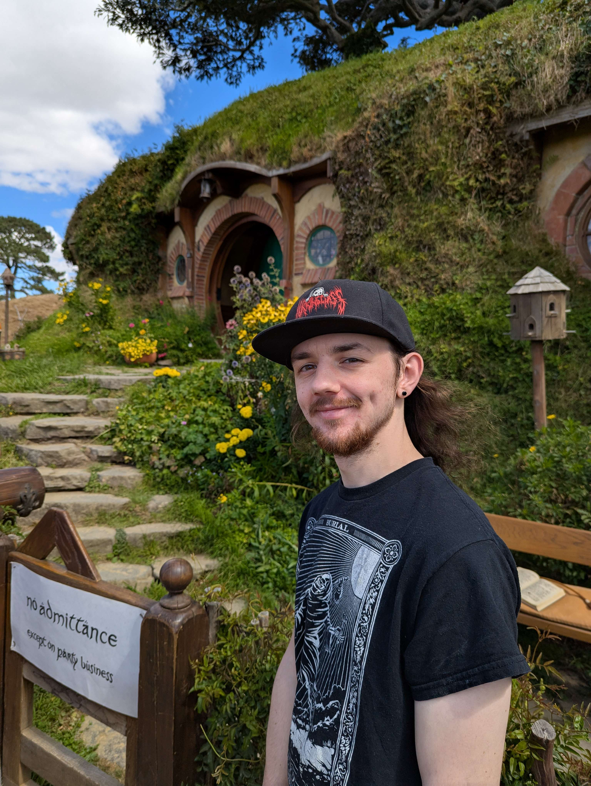
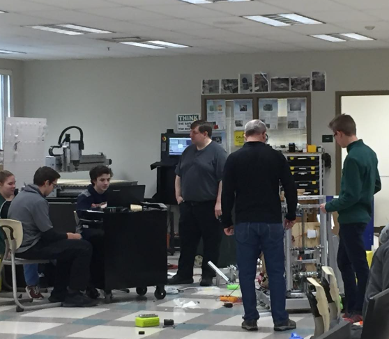
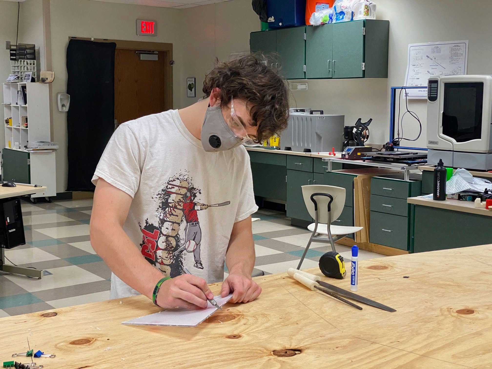
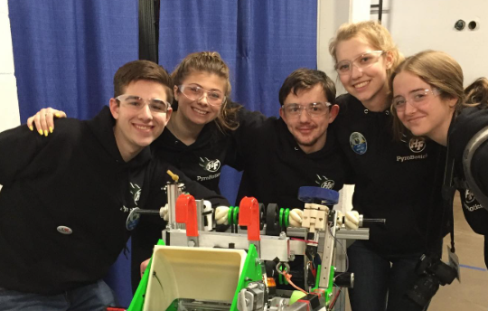
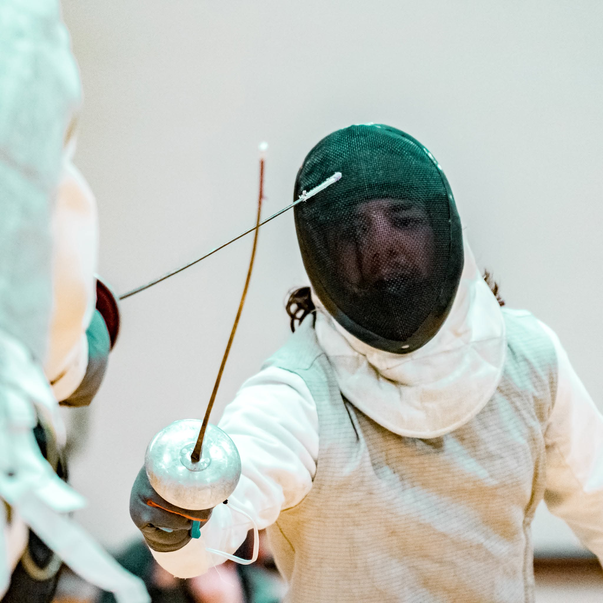

I love to work hard and efficiently. There have been many times people have thanked me for
getting something done in a timely manner, and that makes me feel good. I love helping people when
they are stressed or are in a time crunch, because that's what I'm good at. I also love working under
pressure. It allows me to stay focused on that specific task and gives me a sense of achievement
when I complete that task.
The IT-Help desk position interests me because the work atmosphere is in a constant state
of “under-pressure." It feels like a perfect environment in which I will thrive. Being around other
people, but not directly working with them, but still being to ask them questions is a skill I have fully
developed as that is the biggest component of being a mechanic. Customer service is also a skill I
have fully developed from my time as a Code Sensei as well as my time as a higher level mechanic



